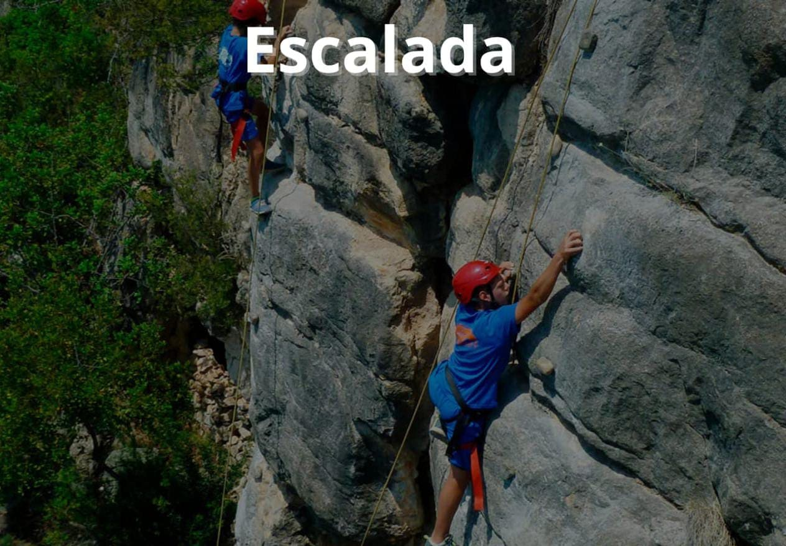
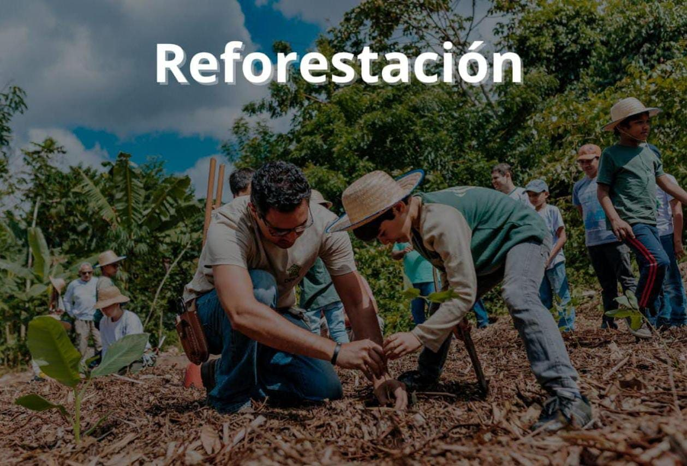
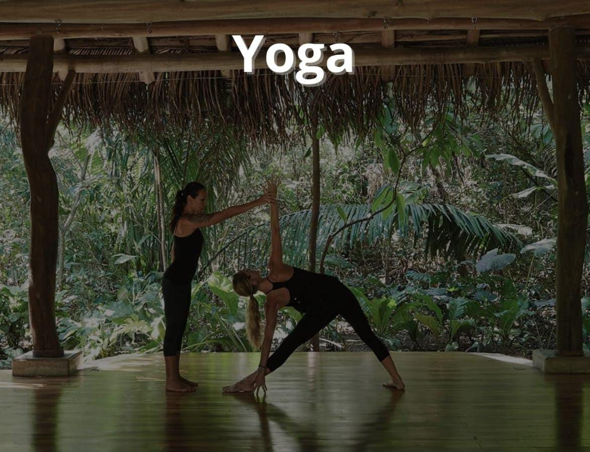
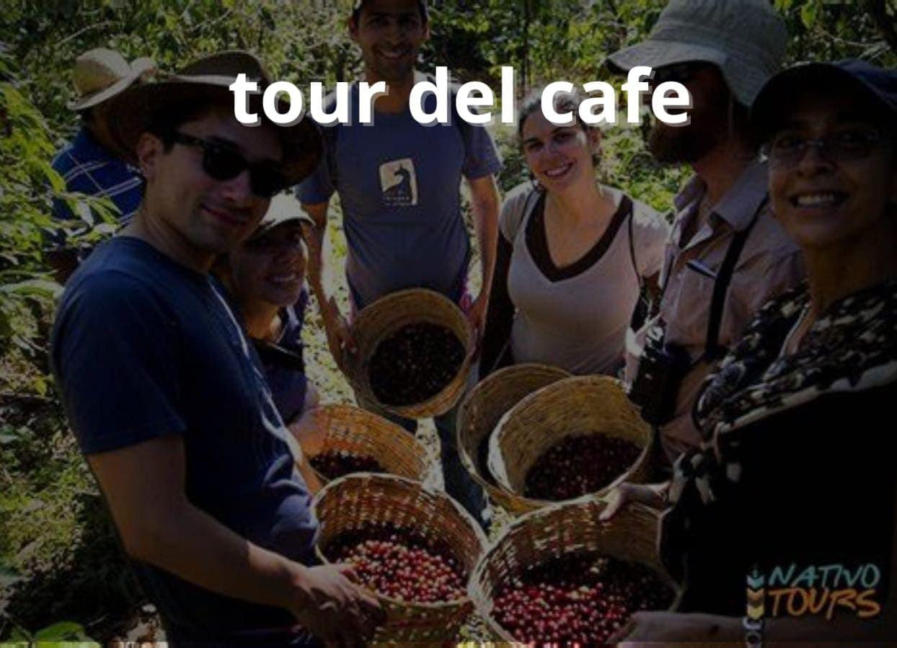
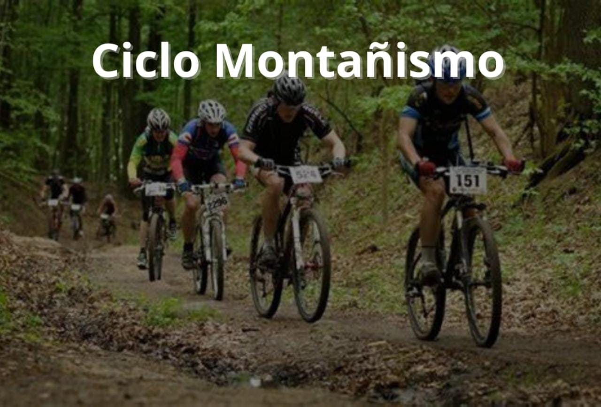
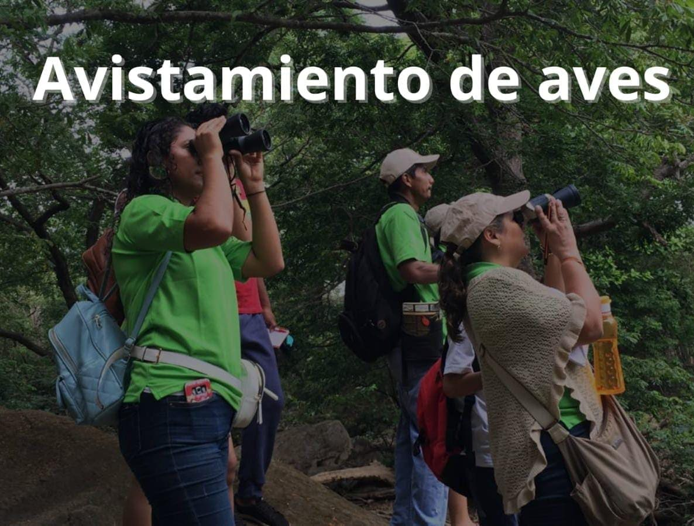
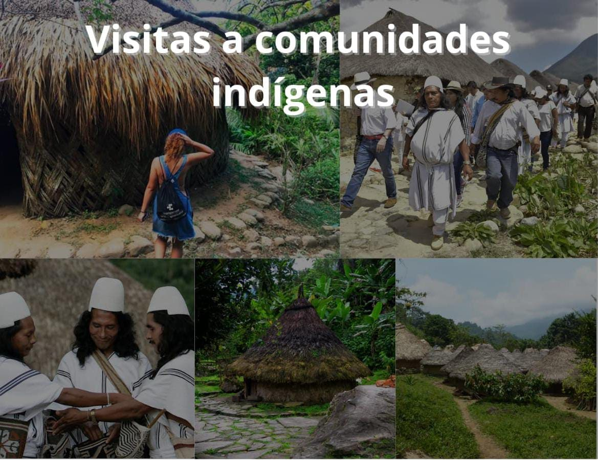
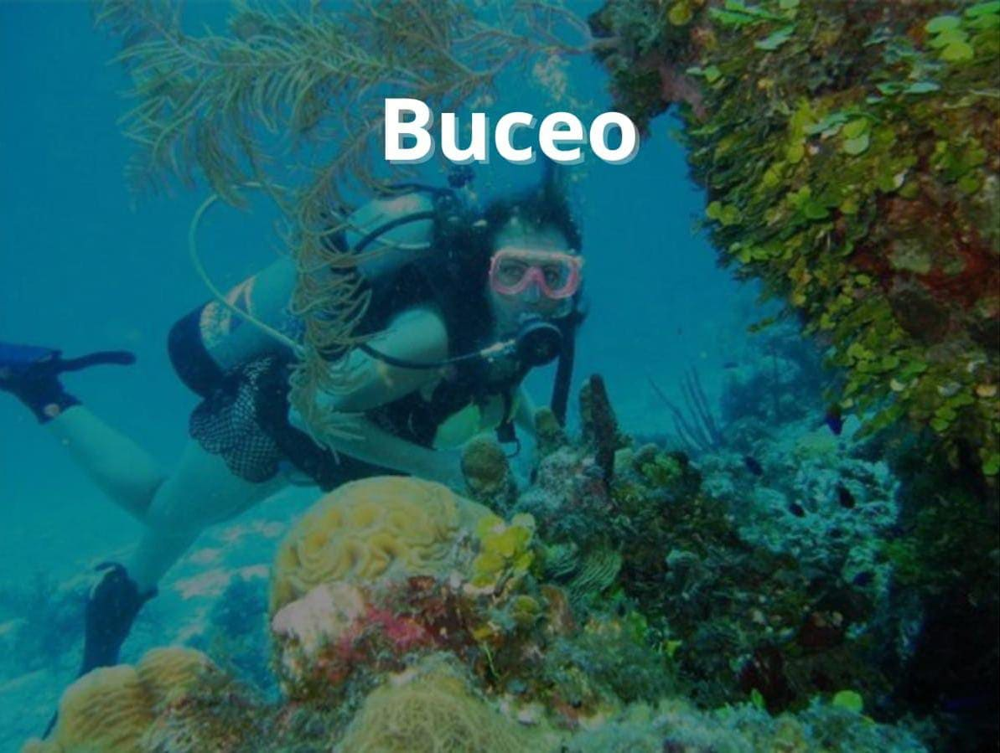

Arriesgate con nosotros
Alojamiento
La agencia de viajes ECULTUR te ofrece diferentes tipos de alojamientos cómo:
- Hotel Sierra Minca
- Malokas de la Sierra Nevada
- zonas de camping
Transporte
La agencia de viajes ECULTUR te ofrece el servicio de Transfer con empresas como:
-berlinastur
- chivas de santa Marta
Alimentación
La agencia de viajes ECULTUR ofrece experiencias únicas implementando un servicio de alimentación en lugares como:
- restaurante casa cristi
- la cocina tradicional de las culturas Tayrona
Guía
La agencia de viajes ECULTUR te ofrece guías calificados y con un buen servicio profesional propio de la agencia, el cual siempre estará dispuesto para que su experiencia sea inolvidable
Actividades







